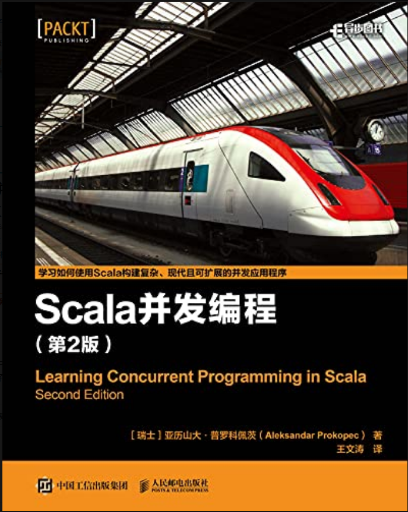

1.1.
简介
1.2.
第1章: 概述
1.3.
第2章: JVM 和 JMM 上的并发性
1.4.
第3章: 并发编程的传统构造模块
1.5.
第4章: 基于 Future 和 Promise 的异步编程
1.6.
第5章: 数据并行容器
1.7.
第6章: 基于响应式扩展的并发编程
1.8.
第7章: 软件事务性内存
1.9.
第8章: ⻆色模型
1.10.
第9章: 并发编程实践
1.11.
第10章: 反应器编程模型
Published with GitBook
简介
1.
简介
1. 简介
并发编程学习笔记
内容主要包括
传统并发模型
基于 Future 和 Promise 的异步编程
数据并行容器
基于响应式扩展的并发编程
软件事务性内存
⻆色模型
并发编程实践
反应器编程模型
主要参考书目

results matching "
"
No results matching "
"